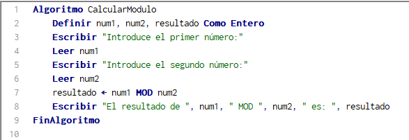
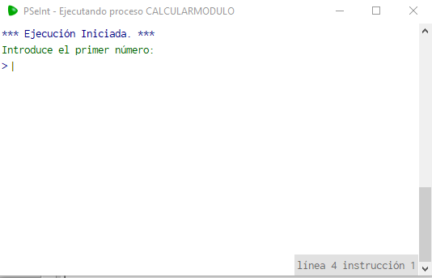
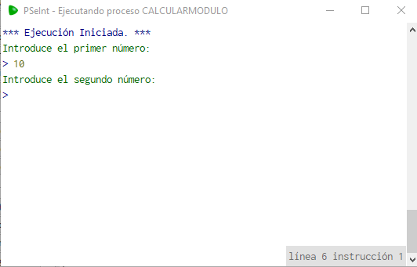

La función “mod” de PSeInt Se encuentra en el panel lateral que observaremos a continuacion:
Ahora veremos la sintaxis y el codigo usado para el ejemplo que usaremos mas adelante.
Como se puede observar el mod viene siendo una sintaxis donde te indica lo que sobra de una division es decir el residuo por eso ahora veremos en esta imagen como lo interpreta el programa paso a paso.
Aqui en este ejemplo veremos la sintaxis paso a paso.
En este paso 1 tendremos que insertar el primero numero:
Insertamos el Primer numero que seria el 10:
Insertamos el Segundo numero que seria el 2, le damos enter y el resultado sera de la siguiente manera:
En este caso utilizamos la division ejemplar de 10/2 (10 es el primer numero y el 2 el segundo), aclarado esto veremos un resultado MOD 0, lo he expresado en MOD para que se haga mas facil la comprensión de la función mostrada anteriormente porque 10/2 no tiene residuo, el residuo son los numeros que estan abajo del primer numero en el proceso de la división.
Nota: Este codigo realizado solo acepta NUMEROS ENTEROS, NO REALES para aclaración de dudas ya que es una explicación ejemplar